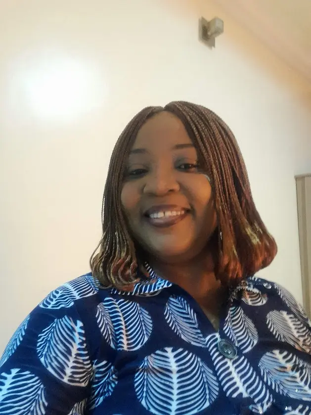

Home
About Me
I am a motivated learner with a strong interest in technology, problem-solving, and personal growth. My background is in Information Technology, where I developed skills in computer support, digital tools, and basic programming. I enjoy exploring how technology can be used to solve real-world problems and improve people’s lives. Currently, I am continuing my education to strengthen my knowledge in web development and computer programming. Returning to school has been both challenging and rewarding, but it has helped me build new skills, confidence, and discipline. I believe that learning is a lifelong process, and I am committed to improving myself every day.
Student Photo

Web Certificate Courses
Total Credits: